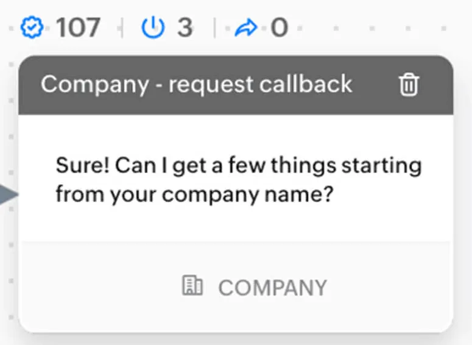
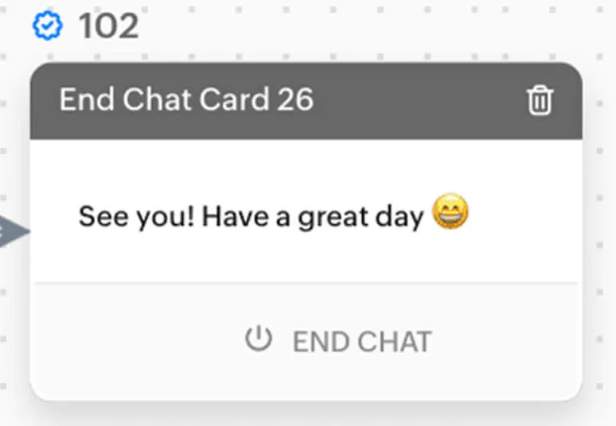

A simpler flow wasn’t enough anymore.
SalesIQ already had a basic way to define bot conversations. As the product grew, that experience needed to go beyond a simple flow.

The opportunity: rethink how businesses create bots, from defining conversations to controlling logic, collecting information and connecting to business workflows.
Approachable for beginners. Flexible enough to grow.
A chatbot is more than a sequence of messages: it collects information, understands responses, handles decisions, branches, performs actions and connects to workflows. All of it had to fit one visual environment.
- 01ConversationsWhat the bot says, in orderA single-choice question

- 02LogicConditions and branchesA router with two outcomes
- 03DataWhat it asks for and keepsCollecting the company

- 04ActionsRoute, hand off, endEnding the chat

- 05IntegrationsWhere it connectsZoho CRM · DeskWebhooks · APIsWorkflows · External systems
Finding the right way to build conversations.
Three interaction models, weighed against each other. The references are the no-code builders of the time; the drawings are redrawn.
Linear flow
Simple and easy to understand, but restrictive for complex conversations. Branching has to live somewhere else.
Freeform canvas
Flexible, but can become difficult to follow when flows grow. Nothing tells you where a conversation starts or ends.
Structured flow
A visual flow that maintains direction, clarity, and flexibility. Blocks sit on a canvas, but connections keep a direction.
The conversation should read like a list, but behave like a flowchart.
From individual steps to a connected conversation.
The builder brings three areas together: a canvas to see the conversation, blocks to build it, and a panel to shape the block you are on.
- 01See the whole conversation
Every block of the bot sits on one canvas, read left to right.
- 02Build through blocks
Each output is a place to continue; the next block attaches to its path.
- 03Configure in context
Selecting a block opens its settings beside the canvas, never on another screen.
The conversation stays visible.
A builder made of building blocks.
Different jobs, one shared anatomy. In the product the blocks are called cards; four families cover what a bot says, does, collects and connects to.
- 01Block type
The title bar names the block; the foot shows its family
- 02Title
Editable, so a large bot stays navigable
- 03Content
What the visitor sees: the question, the message, the request
- 04Output port
Where the conversation continues; routers have one per branch
- 01ResponseWhat the bot communicates.Single choice · Message
Messages, buttons, carousels, and other response patterns.
- 02ActionWhat the bot does.Criteria router · End chat
Routing, actions, handoffs, and other conversational operations.
- 03DataWhat the bot collects.Company · Phone
Questions, user inputs, visitor details, and responses.
- 04IntegrationWhere the conversation connects.Workflows · External systems
Business workflows, external systems, and integrations.
Three decisions shaped the builder.
- 01A flowchart, not a script.
Make conversation logic visible where it happens.
- 02Start simple. Customize when needed.
Defaults first; advanced controls when they are asked for.
- 03Built to expand.
New blocks and integrations fit the same system.
A conversation, built visually.
One sample bot from the canvas above: a visitor is asked whether they want a callback, and the conversation branches from the answer.
- Aska single-choice question
- Decidea router reads the answer
- Branchcallback or not matched
- Resolvecollect details or end warmly
From a focused builder to a broader platform.
What I designed, and what the product grew into afterwards.
- My designCanvas · Block system · ConfigurationShipped in SalesIQ 2.0 on website chat
- TemplatesStart from a ready bot
- More capabilitiesImport and export, more block types
- IntegrationsWorkflows and external systems
- Product evolutionChannels & AISeven channels, 30 languages, Bring Your Own AI
The SalesIQ team shipped and extended the builder; the later capabilities belong to the product and the people who kept building it. Sources: help.zoho.com, blog.zoho.com/salesiq.
Complex conversations became easier to build, understand and extend.
- ✓Visual control over logic
Routing and branches are drawn, not scripted.
- ✓Flexibility without code
Questions, data and handoffs are blocks anyone can place.
- ✓A foundation for complex bots
New blocks, templates and channels arrived without changing the canvas.
Defaults matter as much as features.
A flexible builder is only useful when people know where to start. The experience needs structure, sensible defaults, and the freedom to customize as complexity grows.